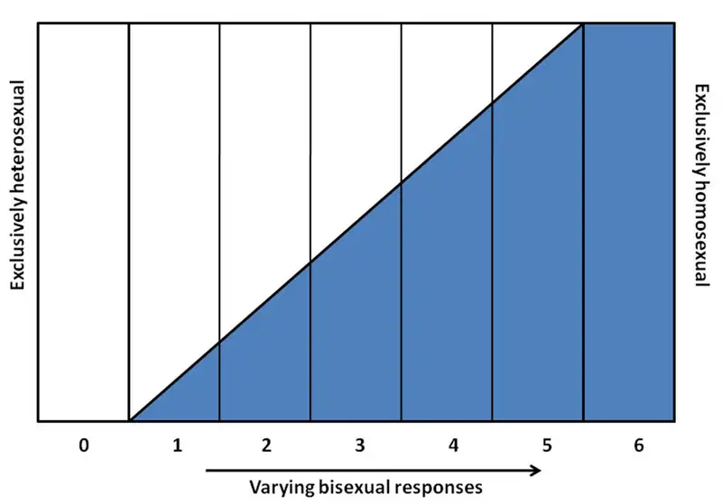
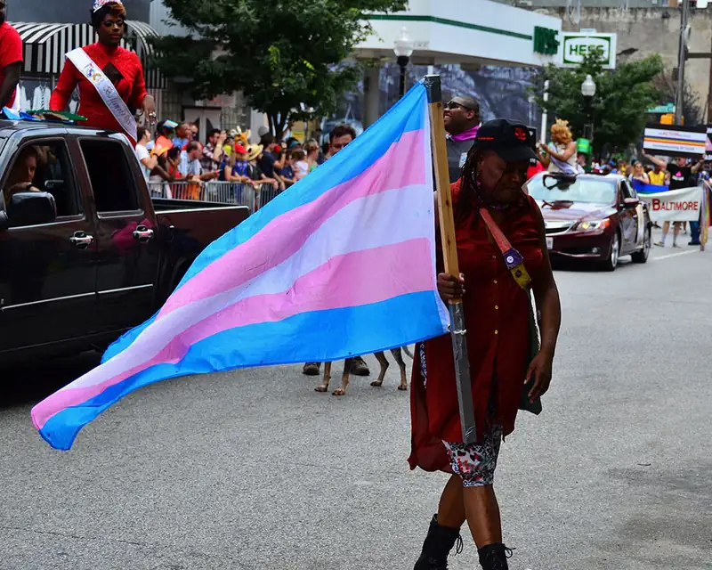
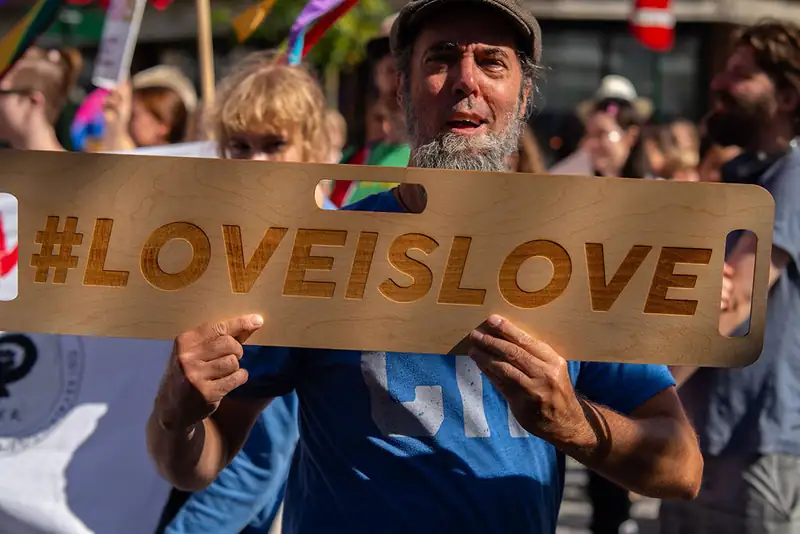
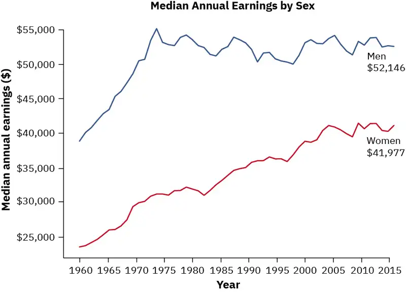
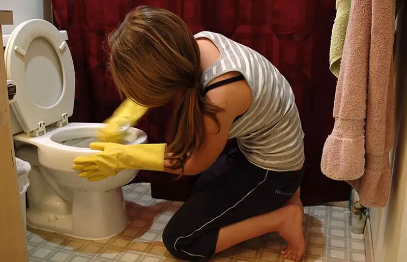
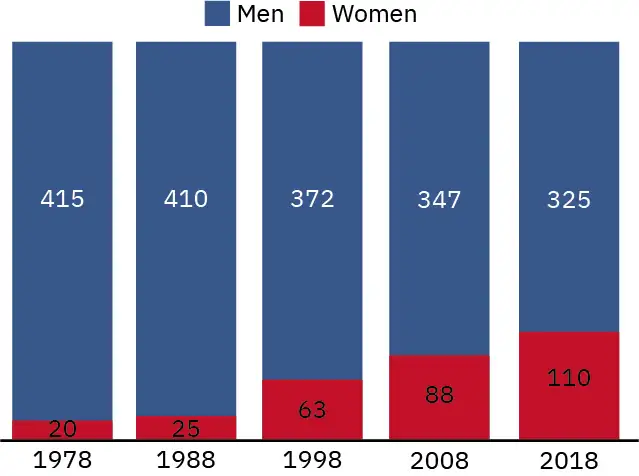
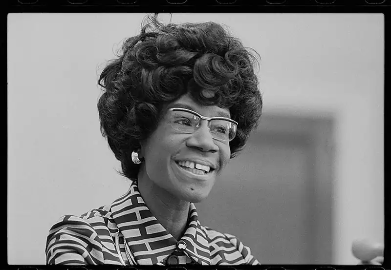

Chapter 12: Gender, Sex, and Sexuality¶
Introduction¶
Imagine that there's a fire in a building nearby. As you watch the flames and smoke pour out of windows, you also watch firefighters run inside. Minutes go by and more people arrive--crowds, news trucks, ambulances. Firefighters working the hoses start pointing to a top-floor window, where a lone member of their crew emerges half-pulling, half-carrying a victim of the fire. Behind them, through the window, you can see the fire in the background, flames that the firefighter must have pushed through to get to the victim. Eventually, others reach them with large ladders, and they bring the nearly unconscious victim down to the street.
Close up, you can see the heroic firefighter is covered in dirt and soot. A large gash is visible in their suit, and they're immediately given medical attention. As the EMTs pull off the firefighters' helmet, you're surprised to see features you identify as a woman's. You had just assumed the person was a man, but you were incorrect.
You wouldn't be alone. For centuries, nearly all firefighters had been men. As a child, saying fireman and firemen may have been perfectly appropriate, because all the people you met in the profession were, in fact, men. But as with many professions that were formerly almost exclusively gender-specific, firefighting has become more integrated.
What does that mean for the people in those professions? They must endure physical challenges, overcome stereotypes about any physical limitations, and likely deal with a culture built over a long time to appeal to and serve the needs of men. As they train, firefighters may be yelled at and undergo levels of punishment for not achieving the necessary standards. Does the dynamic of those interactions change when a man in a superior position is for the first time giving orders and issuing reprimands to people of another gender? Should they be able to treat women the same way they treated men? What would be equal in that situation?
Consider another profession. What would you think about if you witnessed a young woman being pepper sprayed by a man? Is she fulfilling the role society may assume for her? Does it matter that the person spraying her is a man, and that he has a degree of control over her?
Military police and security personnel are required to be pepper sprayed at least once during their training. The logic goes: They may have to utilize this deterrent against other people, and so they should have experienced it. While there are no guarantees that the future enforcement officer will use the substances judiciously, having experienced the painful effects of pepper spray is deemed more likely to produce a level of empathy and restraint.
But is this what she signed up for? Assuming that these military personnel have undergone some level of training prior to this event—they've invested their lives and others have invested in them—could she turn back? How would her peers react? How would her family and others react?
Saving someone from a burning building takes a degree of courage and ability that is very rare, regardless of gender. Voluntary pepper spraying is an extreme situation, again regardless of gender. But gender plays a role in how we see the people involved in both situations. Gender and sexuality are among the most powerful and impactful elements of people's identities, and drive the way they see the world and the way the world sees them. People of different genders go through difficult circumstances and events based partly on their role in society—a role that they do not often define for themselves. And when people express, identify, or outwardly display signs that they do not fit in a societies, established categories, they may face exclusion and discrimination.
12.1 Sex, Gender, Identity, and Expression¶
Learning Objectives
By the end of this section, you should be able to:
- Define and differentiate between sex and gender
- Define and discuss what is meant by gender identity
- Distinguish the meanings of different sexual orientations, gender identities, and gender expressions
When filling out a document such as a job application or school registration form, you are often asked to provide your name, address, phone number, birth date, and sex or gender. But have you ever been asked to provide your sex and your gender? Like most people, you may not have realized that sex and gender are not the same. However, sociologists and most other social scientists view them as conceptually distinct. Sex refers to physical or physiological differences between males and females, including both primary sex characteristics (the reproductive system) and secondary characteristics such as height and muscularity. Gender refers to behaviors, personal traits, and social positions that society attributes to being female or male.
A person’s sex, as determined by their biology, does not always correspond with their gender. Therefore, the terms sex and gender are not interchangeable. A baby who is born with male genitalia will most likely be identified as male. As a child or adult, however, they may identify with the feminine aspects of culture. Since the term sex refers to biological or physical distinctions, characteristics of sex will not vary significantly between different human societies. Generally, persons of the female sex, regardless of culture, will eventually menstruate and develop breasts that can lactate. Characteristics of gender, on the other hand, may vary greatly between different societies. For example, in U.S. culture, it is considered feminine (or a trait of the female gender) to wear a dress or skirt. However, in many Middle Eastern, Asian, and African cultures, sarongs, robes, or gowns are considered masculine. The kilt worn by a Scottish man does not make him appear feminine in that culture.
The dichotomous or binary view of gender (the notion that someone is either male or female) is specific to certain cultures and is not universal. In some cultures gender is viewed as fluid. In the past, some anthropologists used the term berdache to refer to individuals who occasionally or permanently dressed and lived as a different gender. The practice has been noted among certain Native American tribes (Jacobs, Thomas, and Lang 1997). Samoan culture accepts what Samoans refer to as a “third gender.” Fa’afafine, which translates as “the way of the woman,” is a term used to describe individuals who are born biologically male but embody both masculine and feminine traits. Fa’afafines are considered an important part of Samoan culture. Individuals from other cultures may mislabel their sexuality because fa’afafines have a varied sexual life that may include men and women (Poasa 1992).
Social Policy and Debate: The Legalese of Sex and Gender
The terms sex and gender have not always been differentiated in the English language. It was not until the 1950s that U.S. and British psychologists and other professionals formally began distinguishing between sex and gender. Since then, professionals have increasingly used the term gender (Moi 2005). By the end of the twenty-first century, expanding the proper usage of the term gender to everyday language became more challenging—particularly where legal language is concerned. In an effort to clarify usage of the terms sex and gender, U.S. Supreme Court Justice Antonin Scalia wrote in a 1994 briefing, “The word gender has acquired the new and useful connotation of cultural or attitudinal characteristics (as opposed to physical characteristics) distinctive to the sexes. That is to say, gender is to sex as feminine is to female and masculine is to male” (J.E.B. v. Alabama, 144 S. Ct. 1436 [1994]). Supreme Court Justice Ruth Bader Ginsburg had a different take, however. She freely swapped them in her briefings so as to avoid having the word “sex” pop up too often. Ginsburg decided on this approach earlier in her career while she was arguing before the Supreme court; her Columbia Law School secretary suggested it to Ginsburg, saying that when “those nine men” (the Supreme Court justices), “hear that word and their first association is not the way you want them to be thinking” (Block 2020).
More recently, the word “sex” was a key element of the landmark Supreme Court case affirming that the Civil Rights Act's workplace protections applied to LGBTQ people. Throughout the case documents and discussions, the term and its meanings are discussed extensively. In his decision statement, Justice Neil Gorsuch wrote, “It is impossible to discriminate against a person for being homosexual or transgender without discriminating ... based on sex” (Supreme Court 2020). Dissenting justices and commentators felt that Gorsuch and the other justices in the majority were recalibrating the original usage of the term. The arguments about the language itself, which occupy much of the Court's writings on the matter, are further evidence of the evolving nature of the words, as well as their significance.
Sexuality and Sexual Orientation¶
A person's sexuality is their capacity to experience sexual feelings and attraction. Studying sexual attitudes and practices is a particularly interesting field of sociology because sexual behavior and attitudes about sexual behavior have cultural and societal influences and impacts. As you will see in the Relationships, Marriage, and Family chapter, each society interprets sexuality and sexual activity in different ways, with different attitudes about premarital sex, the age of sexual consent, homosexuality, masturbation, and other sexual behaviors (Widmer 1998).
A person’s sexual orientation is their physical, mental, emotional, and sexual attraction to a particular sex (male and/or female). Sexual orientation is typically divided into several categories: heterosexuality, the attraction to individuals of the other sex; homosexuality, the attraction to individuals of the same sex; bisexuality, the attraction to individuals of either sex; asexuality, a lack of sexual attraction or desire for sexual contact; pansexuality, an attraction to people regardless of sex, gender, gender identity, or gender expression; omnisexuality, an attraction to people of all sexes, genders, gender identities, and gender expressions that considers the person's gender, and queer, an umbrella term used to describe sexual orientation, gender identity or gender expression. Other categories may not refer to a sexual attraction, but rather a romantic one. For example, an aromantic person does not experience romantic attraction; this is different from asexuality, which refers to a lack of sexual attraction. And some sexual orientations do not refer to gender in their description, though those who identify as having that orientation may feel attraction to a certain gender. For example, demisexual refers to someone who feels a sexual attraction to someone only after they form an emotional bond; the term itself doesn't distinguish among gender identities, but the person may feel attraction based on gender (PFLAG 2021). It is important to acknowledge and understand that many of these orientations exist on a spectrum, and there may be no specific term to describe how an individual feels. Some terms have been developed to address this—such as graysexual or grayromantic—but their usage is a personal choice (Asexual Visibility and Education Network 2021).
People who are attracted to others of a different gender are typically referred to as "straight," and people attracted to others of the same gender are typically referred to as "gay" for men and "lesbian" for women. As discussed, above, however, there are many more sexual and romantic orientations, so the term "gay," for example, should not be used to describe all of them. Proper terminology includes the acronyms LGBT and LGBTQ, which stands for “Lesbian, Gay, Bisexual, Transgender” (and “Queer” or “Questioning” when the Q is added). In other cases, people and organizations may add "I" to represent Intersex people (described below), and "A" for Asexual or Aromantic people (or sometimes for "Allies"), as well as one "P" to describe Pansexual people and sometimes another "P" to describe Polysexual people. Finally, some people and organizations add a plus sign (+) to represent other possible identities or orientations. Sexuality and gender terminology are constantly changing, and may mean different things to different people; they are not universal, and each individual defines them for themselves (UC Davis LGBTQIA Resource Center 2020). Finally, a person who does not fully understand all of these terms can still be supportive of people who have those orientations or others; in fact, advocacy and support organizations indicate it is much better to admit you don't know something than to make assumptions or apply an incorrect label to someone (GLAAD 2021).
While the descriptions above are evidence of a vast degree of diversity, the United States and many other countries are heteronormative societies, meaning many people assume heterosexual orientation is biologically determined and is the default or normal type of orientation. While awareness and acceptance of different sexual orientations and identities seems to be increasing, the influence of a heteronormative society can lead LGBTQ people to be treated like "others," even by people who do not deliberately seek to cause them harm. This can lead to significant distress (Boyer 2020). Causes of these heteronormative behaviors and expectations are tied to implicit biases; they can be especially harmful for children and young adults (Tompkins 2017).
There is not a wealth of research describing exactly when people become aware of their sexual orientation. According to current scientific understanding, individuals are usually aware of their sexual orientation between middle childhood and early adolescence (American Psychological Association 2008). They do not have to participate in sexual activity to be aware of these emotional, romantic, and physical attractions; people can be celibate and still recognize their sexual orientation, and may have very different experiences of discovering and accepting their sexual orientation. Some studies have shown that a percentage of people may start to have feelings related to attraction or orientation at ages nine or ten, even if these feelings are not sexual (Calzo 2018). At the point of puberty, some may be able to announce their sexual orientation, while others may be unready or unwilling to make their sexual orientation or identity known since it goes against society’s historical norms (APA 2008). And finally, some people recognize their true sexual orientation later in life—in their 30s, 40s, and beyond.
There is no scientific consensus regarding the exact reasons why an individual holds a specific sexual orientation. Research has been conducted to study the possible genetic, hormonal, developmental, social, and cultural influences on sexual orientation, but there has been no evidence that links sexual orientation to one factor (APA 2008). Alfred Kinsey was among the first to conceptualize sexuality as a continuum rather than a strict dichotomy of gay or straight. He created a six-point rating scale that ranges from exclusively heterosexual to exclusively homosexual. See the figure below. In his 1948 work Sexual Behavior in the Human Male, Kinsey writes, “Males do not represent two discrete populations, heterosexual and homosexual. The world is not to be divided into sheep and goats … The living world is a continuum in each and every one of its aspects” (Kinsey 1948). Many of Kinsey's specific research findings have been criticized or discredited, but his influence on future research is widely accepted.

Later scholarship by Eve Kosofsky Sedgwick expanded on Kinsey’s notions. She coined the term “homosocial” to oppose “homosexual,” describing nonsexual same-sex relations. Sedgwick recognized that in U.S. culture, males are subject to a clear divide between the two sides of this continuum, whereas females enjoy more fluidity. This can be illustrated by the way women in the United States can express homosocial feelings (nonsexual regard for people of the same sex) through hugging, handholding, and physical closeness. In contrast, U.S. males refrain from these expressions since they violate the heteronormative expectation that male sexual attraction should be exclusively for females. Research suggests that it is easier for women violate these norms than men, because men are subject to more social disapproval for being physically close to other men (Sedgwick 1985).
Because of the deeply personal nature of sexual orientation, as well as the societal biases against certain orientations, many people may question their sexual orientation before fully accepting it themselves. In a similar way, parents may question their children's sexual orientation based on certain behaviors. Simply viewing the many web pages and discussion forums dedicated to people expressing their questions makes it very clear that sexual orientation is not always clear. Feelings of guilt, responsibility, rejection, and simple uncertainty can make the process and growth very challenging. For example, a woman married to a man who recognizes that she is asexual, or a man married to a woman who recognizes that he is attracted to men, may both have extreme difficulty coming to terms with their sexuality, as well as disclosing it to others. At younger ages, similarly challenging barriers and difficulties exist. For example, adolescence can be a difficult and uncertain time overall, and feelings of different or changing orientation or nonconformity can only add to the challenges (Mills-Koonce 2018).
Gender Roles¶
As we grow, we learn how to behave from those around us. In this socialization process, children are introduced to certain roles that are typically linked to their biological sex. The term gender role refers to society’s concept of how men and women are expected to look and how they should behave. These roles are based on norms, or standards, created by society. In U.S. culture, masculine roles are usually associated with strength, aggression, and dominance, while feminine roles are usually associated with passivity, nurturing, and subordination. Role learning starts with socialization at birth. Even today, our society is quick to outfit male infants in blue and girls in pink, even applying these color-coded gender labels while a baby is in the womb.
One way children learn gender roles is through play. Parents typically supply boys with trucks, toy guns, and superhero paraphernalia, which are active toys that promote motor skills, aggression, and solitary play. Daughters are often given dolls and dress-up apparel that foster nurturing, social proximity, and role play. Studies have shown that children will most likely choose to play with “gender appropriate” toys (or same-gender toys) even when cross-gender toys are available because parents give children positive feedback (in the form of praise, involvement, and physical closeness) for gender normative behavior (Caldera, Huston, and O’Brien 1998). As discussed in the Socialization chapter, some parents and experts become concerned about young people becoming too attached to these stereotypical gender roles.
The drive to adhere to masculine and feminine gender roles continues later in life, in a tendency sometimes referred to as "occupational sorting" (Gerdeman 2019). Men tend to outnumber women in professions such as law enforcement, the military, and politics. Women tend to outnumber men in care-related occupations such as childcare, healthcare (even though the term “doctor” still conjures the image of a man), and social work. These occupational roles are examples of typical U.S. male and female behavior, derived from our culture’s traditions. Adherence to these roles demonstrates fulfillment of social expectations but not necessarily personal preference (Diamond 2002); sometimes, people work in a profession because of societal pressure and/or the opportunities afforded to them based on their gender.
Historically, women have had difficulty shedding the expectation that they cannot be a "good mother" and a "good worker" at the same time, which results in fewer opportunities and lower levels of pay (Ogden 2019). Generally, men do not share this difficulty. Since the assumed role of men as fathers does not seem to conflict with their perceived work role, men who are fathers (or who are expected to become fathers) do not face the same barriers to employment or promotion (González 2019). This is sometimes referred to as the "motherhood penalty" versus the "fatherhood premium," and is prevalent in many higher income countries (Bygren 2017). These concepts and their financial and societal implications will be revisited later in the chapter.
Gender Identity¶
U.S. society allows for some level of flexibility when it comes to acting out gender roles. To a certain extent, men can assume some feminine roles and women can assume some masculine roles without interfering with their gender identity. Gender identity is a person’s deeply held internal perception of one's gender.
Transgender people's sex assigned at birth and their gender identity are not necessarily the same. A transgender woman is a person who was assigned male at birth but who identifies and/or lives as a woman; a transgender man was assigned female at birth but lives as a man. While determining the size of the transgender population is difficult, it is estimated that 1.4 million adults (Herman 2016) and 2 percent of high school students in the U.S. identify as transgender (Johns 2019). The term "transgender" does not indicate sexual orientation or a particular gender expression, and we should avoid making assumptions about people's sexual orientation based on knowledge about their gender identity (GLAAD 2021).
Some transgender individuals may undertake a process of transition, in which they move from living in a way that is more aligned with the sex assigned at birth to living in a way that is aligned with their gender identity. Transitioning may take the form of social, legal or medical aspects of someone's life, but not everyone undertakes any or all types of transition. Social transition may involve the person's presentation, name, pronouns, and relationships. Legal transition can include changing their gender on government or other official documents, changing their legal name, and so on. Some people may undergo a physical or medical transition, in which they change their outward, physical, or sexual characteristics in order for their physical being to better align with their gender identity (UCSF Transgender Care 2019). Not all transgender individuals choose to alter their bodies: many will maintain their original anatomy but may present themselves to society as another gender. This is typically done by adopting the dress, hairstyle, mannerisms, or other characteristic typically assigned to another gender. It is important to note that people who cross-dress, or wear clothing that is traditionally assigned to a gender different from their biological sex, are not necessarily transgender. Cross-dressing is typically a form of self-expression or personal style, and it does not indicate a person's gender identity or that they are transgender (TSER 2021).

There is no single, conclusive explanation for why people are transgender. Transgender expressions and experiences are so diverse that it is difficult to identify their origin. Some hypotheses suggest biological factors such as genetics or prenatal hormone levels as well as social and cultural factors such as childhood and adulthood experiences. Most experts believe that all of these factors contribute to a person’s gender identity (APA 2008).
Intersex is a general term used to describe people whose sex traits, reproductive anatomy, hormones, or chromosomes are different from the usual two ways human bodies develop. Some intersex traits are recognized at birth, while others are not recognizable until puberty or later in life (interACT 2021). While some intersex people have physically recognizable features that are described by specific medical terms, intersex people and newborns are healthy. Most in the medical and intersex community reject unnecessary surgeries intended to make a baby conform to a specific gender assignment; medical ethicists indicate that any surgery to alter intersex characteristics or traits—if desired—should be delayed until an individual can decide for themselves (Behrens 2021). If a physical trait or medical condition prohibits a baby from urinating or performing another bodily function (which is very rare), then a medical procedure such as surgery will be needed; in other cases, hormonal issues related to intersex characteristics may require medical intervention. Intersex and transgender are not interchangeable terms; many transgender people have no intersex traits, and many intersex people do not consider themselves transgender. Some intersex people believe that intersex people should be included within the LGBTQ community, while others do not (Koyama n.d.).
Those who identify with the sex they were assigned at birth are often referred to as cisgender, utilizing the Latin prefix "cis," which means "on the same side." (The prefix "trans" means "across.") Because they are in the majority and do not have a potential component to transition, many cisgender people do not self-identify as such. As with transgender people, the term or usage of cisgender does not indicate a person's sexual orientation, gender, or gender expression (TSER 2021). And as many societies are heteronormative, they are also cisnormative, which is the assumption or expectation that everyone is cisgender, and that anything other than cisgender is not normal.
The language of sexuality, sexual orientation, gender identity, and gender expression is continually changing and evolving. In order to get an overview of some of the most commonly used terms, explore the Trans Student Educational Resources Online Glossary: http://openstax.org/r/tsero
When individuals do not feel comfortable identifying with the gender associated with their biological sex, then they may experience gender dysphoria. Gender dysphoria is a diagnostic category in the fifth edition of the Diagnostic and Statistical Manual of Mental Disorders (DSM-5) that describes a deep sense of unease, anxiety, or discomfort that may occur in people whose gender does not align with their sex assigned at birth. This dysphoria must persist for at least six months and result in significant distress or dysfunction to meet DSM-5 diagnostic criteria. In order for people to be assigned this diagnostic category, they must verbalize their desire to become the other gender. It is important to note that not all transgender people experience gender dysphoria, and that its diagnostic categorization is not universally accepted. For example, in 2019, the World Health Organization reclassified “gender identity disorder” as “gender incongruence,” and categorized it under sexual health rather than a mental disorder in order to reduce the potential for negative stigma. However, health and mental health professionals indicate that the presence of the diagnostic category does assist in supporting those who need treatment or help.
People become aware that they may be transgender at different ages. Even if someone does not have a full (or even partial) understanding of gender terminology and its implications, they can still develop an awareness that their gender assigned at birth does not align with their gender identity. Society, particularly in the United States, has been reluctant to accept transgender identities at any age, but we have particular difficulty accepting those identities in children. Many people feel that children are too young to understand their feelings, and that they may "grow out of it." And it is true that some children who verbalize their identification or desire to live as another gender may ultimately decide to live in alignment with their assigned gender. But if a child consistently describes themself as a gender (or as both genders, without binary gender, or another expression of their gender) and/or expresses themself as that gender over a long period of time, their feelings cannot be attributed to going through a "phase" (Mayo Clinic 2021).
Some children, like many transgender people, may feel pressure to conform to social norms, which may lead them to suppress or hide their identity. Experts find evidence of gender dysphoria—the long-term distress associated with gender identification—in children as young as seven (Zaliznyak 2020). Again, most children have a limited understanding of the social and societal impacts of being transgender, but they can feel strongly that they are not aligned with their assigned sex. And considering that many transgender people do not come out or begin to transition until much later in life—well into their twenties—they may live for a long time under that distress.
Discrimination Against LGBTQ people¶
Recall from the chapter on Crime and Deviance that the FBI's hate crime data indicates that crimes against LGBTQ people have been increasing, and that those crimes account for nearly one in five hate crimes committed in the United States (FBI 2020). While the disbanding of anti-LGBTQ laws in the United States has reduced government or law enforcement oppression or abuse, it has not eliminated it. In other countries, however, LGBTQ people can face even more danger. Reports from the United Nations, Human Rights Watch, and the International Lesbian, Gay, Trans, and Intersex Association (ILGA) indicate that many countries impose penalties for same-sex relationships, gender noncomformity, and other acts deemed opposed to the cultural or religious observances of the nation. As of 2020, six United Nations members imposed the death penalty for consensual same-sex acts, and another 61 countries penalized same sex acts, through jail time, corporal punishment (such as lashing), or other measures. These countries include prominent United States allies such as the United Arab Emirates and Saudi Arabia (both of which can legally impose the death penalty for same-sex acts). Some nearby nations criminalize same-sex relations: Barbados can impose lifetime imprisonment for same-sex acts, and Jamaica, St. Kitts and Nevis, and Saint Lucia have lesser penalties, though Saint Lucia's government indicates it does not enforce those laws (ILGA 2020). Even when the government criminal code does not formalize anti-LGBTQ penalties, local ordinances or government agents may have wide discretion. For example, many people fleeing Central American countries do so as a result of anti-LGBTQ violence, sometimes at the hands of police (Human Rights Watch 2020).
Such severe treatment at the hands of the government is no longer the case in the United States. But until the 1960s and 1970s, every state in the country criminalized same-sex acts, which allowed the military to dishonorably discharge gay veterans (stripping them of all benefits) and law enforcement agencies to investigate and detain people suspected of same-sex acts. Police regularly raided bars and clubs simply for allowing gay and lesbian people to dance together. Public decency laws allowed police to arrest people if they did not wear clothing aligning with the typical dress for their biological sex. Criminalization of same-sex acts began to unravel at the state level in the 1960's and 1970s, and was fully invalidated in a 2003 Supreme Court decision.
Hate crimes and anti-LGBTQ legislation are overt types of discrimination, but LGBTQ people are also treated differently from straight and cisgender people in schools, housing, and in healthcare. This can have effects on mental health, employment and financial opportunities, and relationships. For example, more than half of LGBTQ adults and 70 percent of those who are transgender or gender nonconforming report experiencing discrimination from a health care professional; this leads to delays or reluctance in seeking care or preventative visits, which has negative health outcomes (American Heart Association 2020). Similarly, elderly LGBTQ people are far less likely to come out to healthcare professionals than are straight or cisgender people, which may also lead to healthcare issues at an age that is typically highly reliant on medical care (Foglia 2014).
Much of this discrimination is based on stereotypes and misinformation. Some is based on heterosexism, which Herek (1990) suggests is both an ideology and a set of institutional practices that privilege straight people and heterosexuality over other sexual orientations. Much like racism and sexism, heterosexism is a systematic disadvantage embedded in our social institutions, offering power to those who conform to heterosexual orientation while simultaneously disadvantaging those who do not. Homophobia, an extreme or irrational aversion to gay, lesbian, bisexual, or all LGBTQ people, which often manifests as prejudice and bias. Transphobia is a fear, hatred, or dislike of transgender people, and/or prejudice and discrimination against them by individuals or institutions.
Fighting discrimination and being an ally¶

Major policies to prevent discrimination based on sexual orientation have not come into effect until recent years. In 2011, President Obama overturned “don’t ask, don’t tell,” a controversial policy that required gay and lesbian people in the US military to keep their sexuality undisclosed. In 2015, the Supreme Court ruled in the case of Obgerfell vs. Hodges that the right to civil marriage was guaranteed to same-sex couples. And, as discussed above, in the landmark 2020 Supreme Court decision added sexual orientation and gender identity as categories protected from employment discrimination by the Civil Rights Act. At the same time, laws passed in several states permit some level of discrimination against same-sex couples and other LGBTQ people based on a person's individual religious beliefs or prejudices.
Supporting LGTBQ people requires effort to better understand them without making assumptions. Understand people by listening, respecting them, and by remembering that every person—LGBTQ or otherwise— is different. Being gay, lesbian, bisexual, transgender, queer, intersex, or asexual is not a choice, but the way a person expresses or reveals that reality is their choice. Your experience or knowledge of other LGBTQ people (even your own experience if you are LGBTQ) cannot dictate how another person feels or acts. Finally, as discussed in the Race and Ethnicity chapter, intersectionality means that people are defined by more than their gender identity and sexual orientation. People from different age groups, races, abilities, and experiences within the LGTBQ community have different perspectives and needs.
While each individual has their own perspective, respecting their feelings and protecting their equality and wellbeing does have some common elements. These include referring to a person as they would like to be referred to, including the avoidance of abbreviations or slang terms unless you are sure they accept them. For example, many people and organizations (including those referenced in this chapter) use the abbreviation "trans" to represent transgender people, but a non-transgender person should not use that abbreviation unless they know the person or subject is comfortable with it. Respect also includes people's right to privacy: One person should never out a person to someone else or assume that someone is publicly out. LGBTQ allies can support everyone's rights to be equal and empowered members of society, including within organizations, institutions, and even individual classrooms.
Supporting others may require a change in mindset and practice. For example, if a transgender person wants to be referred to by a different name, or use different pronouns, it might take some getting used to, especially if you have spent years referring to the person by another name or by other pronouns. However, making the change is worthwhile and not overly onerous.
You can learn more about being an ally through campus, government, and organizational resources like the Human Rights Campaign's guide https://www.hrc.org/resources/being-an-lgbtq-ally
Language is an important part of culture, and it has been evolving to better include and describe people who are not gender-binary. In many languages, including English, pronouns are gendered. That is, pronouns are intended to identify the gender of the individual being referenced. English has traditionally been binary, providing only “he/him/his,” for male subjects and “she/her/hers,” for female subjects.
This binary system excludes those who identify as neither male nor female. The word “they,” which was used for hundreds of years as a singular pronoun, is more inclusive. As a result, in fact, Merriam Webster selected this use of “they” as Word of the Year for 2019. “They” and other pronouns are now used to reference those who do not identify as male or female on the spectrum of gender identities.
Gender inclusive language has impacts beyond personal references. In biology, anatomy, and healthcare, for example, people commonly refer to organs or processes with gender associations. However, more accurate and inclusive language avoids such associations. For example, women do not produce eggs; ovaries produce eggs. Men are not more likely to be color-blind; those with XY chromosomes are more likely to be color blind (Gender Inclusive Biology 2019).
Beyond the language of gender, the language of society and culture itself can be either a barrier or an opening to inclusivity. Societal norms are important sociological concepts, and behaviors outside of those norms can lead to exclusion. By disassociating gender identity, gender expression, and sexual orientation from the concept of norms, we can begin to eliminate the implicit and explicit biases regarding those realities. In everyday terms, this can take the form of avoiding references to what is normal or not normal in regard to sexuality or gender (Canadian Public Health Association 2019).
12.2 Gender and Gender Inequality¶
Learning Objectives
By the end of this section, you should be able to:
- Explain the influence of socialization on gender roles in the United States
- Explain the stratification of gender in major American institutions
- Provide examples of gender inequality in the United States
- Describe the rise of feminism in the United States
- Describe gender from the view of each sociological perspective
Gender and Socialization¶
The phrase “boys will be boys” is often used to justify behavior such as pushing, shoving, or other forms of aggression from young boys. The phrase implies that such behavior is unchangeable and something that is part of a boy’s nature. Aggressive behavior, when it does not inflict significant harm, is often accepted from boys and men because it is congruent with the cultural script for masculinity. The “script” written by society is in some ways similar to a script written by a playwright. Just as a playwright expects actors to adhere to a prescribed script, society expects women and men to behave according to the expectations of their respective gender roles. Scripts are generally learned through a process known as socialization, which teaches people to behave according to social norms.
Socialization¶
Children learn at a young age that there are distinct expectations for boys and girls. Cross-cultural studies reveal that children are aware of gender roles by age two or three. At four or five, most children are firmly entrenched in culturally appropriate gender roles (Kane 1996). Children acquire these roles through socialization, a process in which people learn to behave in a particular way as dictated by societal values, beliefs, and attitudes. For example, society often views riding a motorcycle as a masculine activity and, therefore, considers it to be part of the male gender role. Attitudes such as this are typically based on stereotypes, oversimplified notions about members of a group. Gender stereotyping involves overgeneralizing about the attitudes, traits, or behavior patterns of women or men. For example, women may be thought of as too timid or weak to ride a motorcycle.
Gender stereotypes form the basis of sexism. Sexism refers to prejudiced beliefs that value one sex over another. It varies in its level of severity. In parts of the world where women are strongly undervalued, young girls may not be given the same access to nutrition, healthcare, and education as boys. Further, they will grow up believing they deserve to be treated differently from boys (UNICEF 2011; Thorne 1993). While it is illegal in the United States when practiced as discrimination, unequal treatment of women continues to pervade social life. It should be noted that discrimination based on sex occurs at both the micro- and macro-levels. Many sociologists focus on discrimination that is built into the social structure; this type of discrimination is known as institutional discrimination (Pincus 2008).
Gender socialization occurs through four major agents of socialization: family, education, peer groups, and mass media. Each agent reinforces gender roles by creating and maintaining normative expectations for gender-specific behavior. Exposure also occurs through secondary agents such as religion and the workplace. Repeated exposure to these agents over time leads men and women into a false sense that they are acting naturally rather than following a socially constructed role.
Family is the first agent of socialization. There is considerable evidence that parents socialize sons and daughters differently. Generally speaking, girls are given more latitude to step outside of their prescribed gender role (Coltrane and Adams 2004; Kimmel 2000; Raffaelli and Ontai 2004). However, differential socialization typically results in greater privileges afforded to sons. For instance, boys are allowed more autonomy and independence at an earlier age than daughters. They may be given fewer restrictions on appropriate clothing, dating habits, or curfew. Sons are also often free from performing domestic duties such as cleaning or cooking and other household tasks that are considered feminine. Daughters are limited by their expectation to be passive and nurturing, generally obedient, and to assume many of the domestic responsibilities.
Even when parents set gender equality as a goal, there may be underlying indications of inequality. For example, boys may be asked to take out the garbage or perform other tasks that require strength or toughness, while girls may be asked to fold laundry or perform duties that require neatness and care. It has been found that fathers are firmer in their expectations for gender conformity than are mothers, and their expectations are stronger for sons than they are for daughters (Kimmel 2000). This is true in many types of activities, including preference for toys, play styles, discipline, chores, and personal achievements. As a result, boys tend to be particularly attuned to their father’s disapproval when engaging in an activity that might be considered feminine, like dancing or singing (Coltraine and Adams 2008). Parental socialization and normative expectations also vary along lines of social class, race, and ethnicity. African American families, for instance, are more likely than Caucasians to model an egalitarian role structure for their children (Staples and Boulin Johnson 2004).
The reinforcement of gender roles and stereotypes continues once a child reaches school age. Until very recently, schools were rather explicit in their efforts to stratify boys and girls. The first step toward stratification was segregation. Girls were encouraged to take home economics or humanities courses and boys to take math and science.
Studies suggest that gender socialization still occurs in schools today, perhaps in less obvious forms (Lips 2004). Teachers may not even realize they are acting in ways that reproduce gender differentiated behavior patterns. Yet any time they ask students to arrange their seats or line up according to gender, teachers may be asserting that boys and girls should be treated differently (Thorne 1993).
Even in levels as low as kindergarten, schools subtly convey messages to girls indicating that they are less intelligent or less important than boys. For example, in a study of teacher responses to male and female students, data indicated that teachers praised male students far more than female students. Teachers interrupted girls more often and gave boys more opportunities to expand on their ideas (Sadker and Sadker 1994). Further, in social as well as academic situations, teachers have traditionally treated boys and girls in opposite ways, reinforcing a sense of competition rather than collaboration (Thorne 1993). Boys are also permitted a greater degree of freedom to break rules or commit minor acts of deviance, whereas girls are expected to follow rules carefully and adopt an obedient role (Ready 2001).
Mimicking the actions of significant others is the first step in the development of a separate sense of self (Mead 1934). Like adults, children become agents who actively facilitate and apply normative gender expectations to those around them. When children do not conform to the appropriate gender role, they may face negative sanctions such as being criticized or marginalized by their peers. Though many of these sanctions are informal, they can be quite severe. For example, a girl who wishes to take karate class instead of dance lessons may be called a “tomboy” and face difficulty gaining acceptance from both male and female peer groups (Ready 2001). Boys, especially, are subject to intense ridicule for gender nonconformity (Coltrane and Adams 2004; Kimmel 2000).
Mass media serves as another significant agent of gender socialization. In television and movies, women tend to have less significant roles and are often portrayed as wives or mothers. When women are given a lead role, it often falls into one of two extremes: a wholesome, saint-like figure or a malevolent, hypersexual figure (Etaugh and Bridges 2003). This same inequality is pervasive in children’s movies (Smith 2008). Research indicates that in the ten top-grossing G-rated movies released between 1991 and 2013, nine out of ten characters were male (Smith 2008).
Television commercials and other forms of advertising also reinforce inequality and gender-based stereotypes. Women are almost exclusively present in ads promoting cooking, cleaning, or childcare-related products (Davis 1993). Think about the last time you saw a man star in a dishwasher or laundry detergent commercial. In general, women are underrepresented in roles that involve leadership, intelligence, or a balanced psyche. Of particular concern is the depiction of women in ways that are dehumanizing, especially in music videos. Even in mainstream advertising, however, themes intermingling violence and sexuality are quite common (Kilbourne 2000).
Social Stratification and Inequality¶
Stratification refers to a system in which groups of people experience unequal access to basic, yet highly valuable, social resources. There is a long history of gender stratification in the United States. When looking to the past, it would appear that society has made great strides in terms of abolishing some of the most blatant forms of gender inequality (see timeline below) but underlying effects of male dominance still permeate many aspects of society.
- Before 1809—Women could not execute a will
- Before 1840—Women were not allowed to own or control property
- Before 1920—Women were not permitted to vote
- Before 1963—Employers could legally pay a woman less than a man for the same work
- Before 1973—Women did not have the right to a safe and legal abortion (Imbornoni 2009)
The Pay Gap¶
Despite making up nearly half (49.8 percent) of payroll employment, men vastly outnumber women in authoritative, powerful, and, therefore, high-earning jobs (U.S. Census Bureau 2010). Even when a woman’s employment status is equal to a man’s, she will generally make only 81 cents for every dollar made by her male counterpart (Payscale 2020). Women in the paid labor force also still do the majority of the unpaid work at home. On an average day, 84 percent of women (compared to 67 percent of men) spend time doing household management activities (U.S. Census Bureau 2011). This double duty keeps working women in a subordinate role in the family structure (Hochschild and Machung 1989).

Gender stratification through the division of labor is not exclusive to the United States. According to George Murdock’s classic work, Outline of World Cultures (1954), all societies classify work by gender. When a pattern appears in all societies, it is called a cultural universal. While the phenomenon of assigning work by gender is universal, its specifics are not. The same task is not assigned to either men or women worldwide. But the way each task’s associated gender is valued is notable. In Murdock’s examination of the division of labor among 324 societies around the world, he found that in nearly all cases the jobs assigned to men were given greater prestige (Murdock and White 1968). Even if the job types were very similar and the differences slight, men’s work was still considered more vital.

Part of the gender pay gap can be attributed to unique barriers faced by women regarding work experience and promotion opportunities. A mother of young children is more likely to drop out of the labor force for several years or work on a reduced schedule than is the father. As a result, women in their 30s and 40s are likely, on average, to have less job experience than men. This effect becomes more evident when considering the pay rates of two groups of women: those who did not leave the workforce and those who did: In the United States, childless women with the same education and experience levels as men are typically paid with closer (but not exact) parity to men. However, women with families and children are paid less: Mothers are recommended a 7.9 percent lower starting salary than non-mothers, which is 8.6 percent lower than men (Correll 2007).
This evidence points to levels of discrimination that go beyond behaviors by individual companies or organizations. As discussed earlier in the gender roles section, many of these gaps are rooted in America’s social patterns of discrimination, which involve the roles that different genders play in child-rearing, rather than individual discrimination by employers in hiring and salary decisions. On the other hand, legal and ethical practices demand that organizations do their part to promote more equity among all genders.
The Glass Ceiling¶
The idea that women are unable to reach the executive suite is known as the glass ceiling. It is an invisible barrier that women encounter when trying to win jobs in the highest level of business. At the beginning of 2021, for example, a record 41 of the world’s largest 500 companies were run by women. While a vast improvement over the number twenty years earlier – where only two of the companies were run by women – these 41 chief executives still only represent eight percent of those large companies (Newcomb 2020).
Why do women have a more difficult time reaching the top of a company? One idea is that there is still a stereotype in the United States that women aren’t aggressive enough to handle the boardroom or that they tend to seek jobs and work with other women (Reiners 2019). Other issues stem from the gender biases based on gender roles and motherhood discussed above.
Another idea is that women lack mentors, executives who take an interest and get them into the right meetings and introduce them to the right people to succeed (Murrell & Blake-Beard 2017).
Women in Politics¶
One of the most important places for women to help other women is in politics. Historically in the United States, like many other institutions, political representation has been mostly made up of White men. By not having women in government, their issues are being decided by people who don’t share their perspective. The number of women elected to serve in Congress has increased over the years, but does not yet accurately reflect the general population. For example, in 2018, the population of the United States was 49 percent male and 51 percent female, but the population of Congress was 78.8 percent male and 21.2 percent female (Manning 2018). Over the years, the number of women in the federal government has increased, but until it accurately reflects the population, there will be inequalities in our laws.

Movements for Change: Feminism¶
One of the underlying issues that continues to plague women in the United States is misogyny. This is the hatred of or, aversion to, or prejudice against women. Over the years misogyny has evolved as an ideology that men are superior to women in all aspects of life. There have been multiple movements to try and fight this prejudice.
In 1963, writer and feminist Betty Friedan published The Feminine Mystique in which she contested the post-World War II belief that it was women’s sole destiny to marry and bear children. Friedan’s book began to raise the consciousness of many women who agreed that homemaking in the suburbs sapped them of their individualism and left them unsatisfied. In 1966, the National Organization for Women (NOW) formed and proceeded to set an agenda for the feminist movement. Framed by a statement of purpose written by Friedan, the agenda began by proclaiming NOW’s goal to make possible women’s participation in all aspects of American life and to gain for them all the rights enjoyed by men.
Feminists engaged in protests and actions designed to bring awareness and change. For example, the New York Radical Women demonstrated at the 1968 Miss America Pageant in Atlantic City to bring attention to the contest’s—and society’s—exploitation of women. The protestors tossed instruments of women’s oppression, including high-heeled shoes, curlers, girdles, and bras, into a “freedom trash can.” News accounts incorrectly described the protest as a “bra burning,” which at the time was a way to demean and trivialize the issue of women’s rights (Gay 2018).
Other protests gave women a more significant voice in a male-dominated social, political, and entertainment climate. For decades, Ladies Home Journal had been a highly influential women’s magazine, managed and edited almost entirely by men. Men even wrote the advice columns and beauty articles. In 1970, protesters held a sit-in at the magazine’s offices, demanding that the company hire a woman editor-in-chief, add women and non-White writers at fair pay, and expand the publication’s focus.
Feminists were concerned with far more than protests, however. In the 1970s, they opened battered women’s shelters and successfully fought for protection from employment discrimination for pregnant women, reform of rape laws (such as the abolition of laws requiring a witness to corroborate a woman’s report of rape), criminalization of domestic violence, and funding for schools that sought to counter sexist stereotypes of women. In 1973, the U.S. Supreme Court in Roe v. Wade invalidated a number of state laws under which abortions obtained during the first three months of pregnancy were illegal. This made a nontherapeutic abortion a legal medical procedure nationwide.
Gloria Steinem had pushed through gender barriers to take on serious journalism subjects, and had emerged as a prominent advocate for women’s rights. Through her work, Steinem met Dorothy Pittman-Hughes, who had founded New York City’s first shelter for domestic violence victims as well as the city’s Agency for Child Development. Together they founded Ms. Magazine, which avoided articles on homemaking and fashion in favor of pieces on women’s rights and empowerment. Ms. showcased powerful and accomplished women such as Shirley Chisholm and Sissy Farenthold, and was among the first publications to bring domestic violence, sexual harassment, and body image issues to the national conversation (Pogrebrin 2011).
Many advances in women’s rights were the result of women’s greater engagement in politics. For example, Patsy Mink, the first Asian American woman elected to Congress, was the co-author of the Education Amendments Act of 1972, Title IX of which prohibits sex discrimination in education. Mink had been interested in fighting discrimination in education since her youth, when she opposed racial segregation in campus housing while a student at the University of Nebraska. She went to law school after being denied admission to medical school because of her gender. Like Mink, many other women sought and won political office, many with the help of the National Women’s Political Caucus (NWPC). In 1971, the NWPC was formed by Bella Abzug, Gloria Steinem, Shirley Chisholm, and other leading feminists to encourage women’s participation in political parties, elect women to office, and raise money for their campaign.

Shirley Chisholm personally took up the mantle of women’s involvement in politics. Born of immigrant parents, she earned degrees from Brooklyn College and Columbia University, and began a career in early childhood education and advocacy. In the 1950’s she joined various political action groups, worked on election campaigns, and pushed for housing and economic reforms. After leaving one organization over its refusal to involve women in the decision-making process, she sought to increase gender and racial diversity within political and activist organizations throughout New York City. In 1968, she became the first Black woman elected to Congress. Refusing to take the quiet role expected of new Representatives, she immediately began sponsoring bills and initiatives. She spoke out against the Vietnam War, and fought for programs such as Head Start and the national school lunch program, which was eventually signed into law after Chisholm led an effort to override a presidential veto. Chisholm would eventually undertake a groundbreaking presidential run in 1972, and is viewed as paving the way for other women, and especially women of color, achieving political and social prominence (Emmrich 2019).
Theoretical Perspectives on Gender¶
Sociological theories help sociologists to develop questions and interpret data. For example, a sociologist studying why middle-school girls are more likely than their male counterparts to fall behind grade-level expectations in math and science might use a feminist perspective to frame her research. Another scholar might proceed from the conflict perspective to investigate why women are underrepresented in political office, and an interactionist might examine how the symbols of femininity interact with symbols of political authority to affect how women in Congress are treated by their male counterparts in meetings.
Structural Functionalism¶
Structural functionalism has provided one of the most important perspectives of sociological research in the twentieth century and has been a major influence on research in the social sciences, including gender studies. Viewing the family as the most integral component of society, assumptions about gender roles within marriage assume a prominent place in this perspective.
Functionalists argue that gender roles were established well before the pre-industrial era when men typically took care of responsibilities outside of the home, such as hunting, and women typically took care of the domestic responsibilities in or around the home. These roles were considered functional because women were often limited by the physical restraints of pregnancy and nursing and unable to leave the home for long periods of time. Once established, these roles were passed on to subsequent generations since they served as an effective means of keeping the family system functioning properly.
When changes occurred in the social and economic climate of the United States during World War II, changes in the family structure also occurred. Many women had to assume the role of breadwinner (or modern hunter-gatherer) alongside their domestic role in order to stabilize a rapidly changing society. When the men returned from war and wanted to reclaim their jobs, society fell back into a state of imbalance, as many women did not want to forfeit their wage-earning positions (Hawke 2007).
Conflict Theory¶
According to conflict theory, society is a struggle for dominance among social groups (like women versus men) that compete for scarce resources. When sociologists examine gender from this perspective, we can view men as the dominant group and women as the subordinate group. According to conflict theory, social problems are created when dominant groups exploit or oppress subordinate groups. Consider the Women’s Suffrage Movement or the debate over women’s “right to choose” their reproductive futures. It is difficult for women to rise above men, as dominant group members create the rules for success and opportunity in society (Farrington and Chertok 1993).
Friedrich Engels, a German sociologist, studied family structure and gender roles. Engels suggested that the same owner-worker relationship seen in the labor force is also seen in the household, with women assuming the role of the proletariat. This is due to women’s dependence on men for the attainment of wages, which is even worse for women who are entirely dependent upon their spouses for economic support. Contemporary conflict theorists suggest that when women become wage earners, they can gain power in the family structure and create more democratic arrangements in the home, although they may still carry the majority of the domestic burden, as noted earlier (Rismanand and Johnson-Sumerford 1998).
Feminist Theory¶
Feminist theory is a type of conflict theory that examines inequalities in gender-related issues. It uses the conflict approach to examine the maintenance of gender roles and inequalities. Radical feminism, in particular, considers the role of the family in perpetuating male dominance. In patriarchal societies, men’s contributions are seen as more valuable than those of women. Patriarchal perspectives and arrangements are widespread and taken for granted. As a result, women’s viewpoints tend to be silenced or marginalized to the point of being discredited or considered invalid.
Sanday’s study of the Indonesian Minangkabau (2004) revealed that in societies some consider to be matriarchies (where women comprise the dominant group), women and men tend to work cooperatively rather than competitively regardless of whether a job is considered feminine by U.S. standards. The men, however, do not experience the sense of bifurcated consciousness under this social structure that modern U.S. females encounter (Sanday 2004).
Symbolic Interactionism¶
Symbolic interactionism aims to understand human behavior by analyzing the critical role of symbols in human interaction. This is certainly relevant to the discussion of masculinity and femininity. Imagine that you walk into a bank hoping to get a small loan for school, a home, or a small business venture. If you meet with a male loan officer, you may state your case logically by listing all the hard numbers that make you a qualified applicant as a means of appealing to the analytical characteristics associated with masculinity. If you meet with a female loan officer, you may make an emotional appeal by stating your good intentions as a means of appealing to the caring characteristics associated with femininity.
Because the meanings attached to symbols are socially created and not natural, and fluid, not static, we act and react to symbols based on the current assigned meaning. The word gay, for example, once meant “cheerful,” but by the 1960s it carried the primary meaning of “homosexual.” In transition, it was even known to mean “careless” or “bright and showing” (Oxford American Dictionary 2010). Furthermore, the word gay (as it refers to a person), carried a somewhat negative and unfavorable meaning fifty years ago, but it has since gained more neutral and even positive connotations. When people perform tasks or possess characteristics based on the gender role assigned to them, they are said to be doing gender. This notion is based on the work of West and Zimmerman (1987). Whether we are expressing our masculinity or femininity, West and Zimmerman argue, we are always "doing gender." Thus, gender is something we do or perform, not something we are.
In other words, both gender and sexuality are socially constructed. The social construction of sexuality refers to the way in which socially created definitions about the cultural appropriateness of sex-linked behavior shape the way people see and experience sexuality. This is in marked contrast to theories of sex, gender, and sexuality that link male and female behavior to biological determinism, or the belief that men and women behave differently due to differences in their biology.
Sociological Research: Being Male, Being Female, and Being Healthy
In 1971, Broverman and Broverman conducted a groundbreaking study on the traits mental health workers ascribed to males and females. When asked to name the characteristics of a female, the list featured words such as unaggressive, gentle, emotional, tactful, less logical, not ambitious, dependent, passive, and neat. The list of male characteristics featured words such as aggressive, rough, unemotional, blunt, logical, direct, active, and sloppy (Seem and Clark 2006). Later, when asked to describe the characteristics of a healthy person (not gender specific), the list was nearly identical to that of a male.
This study uncovered the general assumption that being female is associated with being somewhat unhealthy or not of sound mind. This concept seems extremely dated, but in 2006, Seem and Clark replicated the study and found similar results. Again, the characteristics associated with a healthy male were very similar to that of a healthy (genderless) adult. The list of characteristics associated with being female broadened somewhat but did not show significant change from the original study (Seem and Clark 2006). This interpretation of feminine characteristic may help us one day better understand gender disparities in certain illnesses, such as why one in eight women can be expected to develop clinical depression in her lifetime (National Institute of Mental Health 1999). Perhaps these diagnoses are not just a reflection of women’s health, but also a reflection of society’s labeling of female characteristics, or the result of institutionalized sexism.
12.3 Sexuality¶
Learning Objectives
By the end of this section, you should be able to:
- Differentiate among attitudes associated with sex and sexuality
- Describe sex education issues in the United States
- Discuss theoretical perspectives on sex and sexuality
Sexual Attitudes and Practices¶
In the area of sexuality, sociologists focus their attention on sexual attitudes and practices, not on physiology or anatomy. As mentioned earlier, sexuality is viewed as a person’s capacity for sexual feelings. Studying sexual attitudes and practices is a particularly interesting field of sociology because sexual behavior is a cultural universal. Throughout time and place, the vast majority of human beings have participated in sexual relationships (Broude 2003). Each society, however, interprets sexuality and sexual activity in different ways. At the same time, sociologists have learned that certain norms are shared among most societies. The incest taboo is present in every society, though which relative is deemed unacceptable for sex varies widely from culture to culture. For example, sometimes the relatives of the father are considered acceptable sexual partners for a woman while the relatives of the mother are not. Likewise, societies generally have norms that reinforce their accepted social system of sexuality.
What is considered “normal” in terms of sexual behavior is based on the mores and values of the society. Societies that value monogamy, for example, would likely oppose extramarital sex. Individuals are socialized to sexual attitudes by their family, education system, peers, media, and religion. Historically, religion has been the greatest influence on sexual behavior in most societies, but in more recent years, peers and the media have emerged as two of the strongest influences, particularly among U.S. teens (Potard, Courtois, and Rusch 2008). Let us take a closer look at sexual attitudes in the United States and around the world.
Sexuality around the World¶
Cross-national research on sexual attitudes in industrialized nations reveals that normative standards differ across the world. For example, several studies have shown that Scandinavian students are more tolerant of premarital sex than are U.S. students (Grose 2007). A study of 37 countries reported that non-Western societies—like China, Iran, and India—valued chastity highly in a potential mate, while Western European countries—such as France, the Netherlands, and Sweden—placed little value on prior sexual experiences (Buss 1989).
Even among Western cultures, attitudes can differ. For example, according to a 33,590-person survey across 24 countries, 89 percent of Swedes responded that there is nothing wrong with premarital sex, while only 42 percent of Irish responded this way. From the same study, 93 percent of Filipinos responded that sex before age 16 is always wrong or almost always wrong, while only 75 percent of Russians responded this way (Widmer, Treas, and Newcomb 1998). Sexual attitudes can also vary within a country. For instance, 45 percent of Spaniards responded that homosexuality is always wrong, while 42 percent responded that it is never wrong; only 13 percent responded somewhere in the middle (Widmer, Treas, and Newcomb 1998).
Of industrialized nations, several European nations are is thought to be the most liberal when it comes to attitudes about sex, including sexual practices and sexual openness. Sweden, for example, has very few regulations on sexual images in the media, and sex education, which starts around age six, is a compulsory part of Swedish school curricula. Switzerland, Belgium, Iceland, Denmark, and The Netherlands have similar policies. Their more open approach to sex has helped countries avoid some of the major social problems associated with sex. For example, rates of teen pregnancy and sexually transmitted disease are among the world’s lowest in Switzerland and the Netherlands – lower than other European countries and far lower than the United States (Grose 2007 and Dutch News 2017). It would appear that these approaches are models for the benefits of sexual freedom and frankness. However, implementing their ideals and policies regarding sexuality in other, more politically conservative, nations would likely be met with resistance.
Sexuality in the United States¶
The United States prides itself on being the land of the “free,” but it is rather restrictive when it comes to its citizens’ general attitudes about sex compared to other industrialized nations. In an international survey, 25 percent of U.S. respondents stated that premarital sex is always wrong, while the average among the 24 countries surveyed was 17 percent, with less than ten percent of respondents from France, Germany, and Spain saying premarital sex was unacceptable (Chamie 2018). Similar discrepancies were found in questions about the condemnation of sex before the age of 16, extramarital sex, and homosexuality, with total disapproval of these acts being 12, 13, and 11 percent higher, respectively, in the United States, than the study’s average (Widmer, Treas, and Newcomb 1998). U.S. culture is particularly restrictive in its attitudes about sex when it comes to women and sexuality.
It is widely believed that men are more sexual than are women. In fact, there was a popular notion that men think about sex every seven seconds. Research, however, suggests that men think about sex an average of 19 times per day, which is closer to once an hour, compared to 10 times per day for women (Fisher, Moore, and Pittenger 2011).
Belief that men have—or have the right to—more sexual urges than women creates a double standard. Ira Reiss, a pioneer researcher in the field of sexual studies, defined the double standard as prohibiting premarital sexual intercourse for women but allowing it for men (Reiss 1960). This standard has evolved into allowing women to engage in premarital sex only within committed love relationships, but allowing men to engage in sexual relationships with as many partners as they wish without condition (Milhausen and Herold 1999). Due to this double standard, a woman is likely to have fewer sexual partners in her life time than a man. According to a Centers for Disease Control and Prevention (CDC) survey, the average thirty-five-year-old woman has had three opposite-sex sexual partners while the average thirty-five-year-old man has had twice as many (Centers for Disease Control 2011).
The future of a society’s sexual attitudes may be somewhat predicted by the values and beliefs that a country’s youth expresses about sex and sexuality. Data from the most recent National Survey of Family Growth reveals that 70 percent of boys and 78 percent of girls ages fifteen to nineteen said they “agree” or “strongly agree” that “it’s okay for an unmarried female to have a child" (National Survey of Family Growth 2013). In a separate survey, 65 percent of teens stated that they “strongly agreed” or “somewhat agreed” that although waiting until marriage for sex is a nice idea, it’s not realistic (NBC News 2005). This does not mean that today’s youth have given up traditional sexual values such as monogamy. Nearly all college men (98.9 percent) and women (99.2 percent) who participated in a 2002 study on sexual attitudes stated they wished to settle down with one mutually exclusive sexual partner at some point in their lives, ideally within the next five years (Pedersen et al. 2002).
Sex Education¶
One of the biggest controversies regarding sexual attitudes is sexual education in U.S. classrooms. Unlike many other countries, sex education is not required in all public school curricula in the United States. The heart of the controversy is not about whether sex education should be taught in school (studies have shown that only seven percent of U.S. adults oppose sex education in schools); it is about the type of sex education that should be taught.
Much of the debate is over the issue of abstinence as compared to a comprehensive sex education program. Abstinence-only programs focus on avoiding sex until marriage and/or delaying it as long as possible. So they do not focus on other types of prevention of unwanted pregnancies and sexually transmitted infections. As a result, according to the Sexuality and Information Council of the United States, only 38 percent of high schools and 14 percent of middle schools across the country teach all 19 topics identified as critical for sex education by the Centers for Disease Control and Prevention (Janfaza 2020).
Research suggests that while government officials may still be debating about the content of sexual education in public schools, the majority of U.S. adults are not. Two-thirds (67 percent) of Americans say education about safer sexual practices is more effective than abstinence-only education in terms of reducing unintended pregnancies. A slightly higher percentage—69 percent—say that emphasizing safer sexual practices and contraception in sexuality education is a better way to reduce the spread of STIs than is emphasizing abstinence (Davis 2018).
Even with these clear majorities in favor of comprehensive education, the Federal government offers roughly $85 million per year to communities that will drive abstinence-only sex education (Columbia Public Health 2017 a). The results, as stated earlier, are relatively clear: the United States has nearly four times the rate of teenage pregnancy than a country like Germany, which has a comprehensive sex education program.
In a similar educational issue not necessarily related to sexuality, researchers and public health advocates find that young girls feel underprepared for puberty. Ages of first menstruation (menarche) and breast development are continually declining in the United States, but education about these changes typically doesn't begin until middle school, which is generally too late. Young people indicate concerns about misinformation and discomfort during the informal conversations about the topics with friends, sisters, or mothers (Columbia Public Health 2017 b)
Sociological Perspectives on Sex and Sexuality¶
Sociologists representing all three major theoretical perspectives study the role sexuality plays in social life today. Scholars recognize that sexuality continues to be an important and defining social location and that the manner in which sexuality is constructed has a significant effect on perceptions, interactions, and outcomes.
Structural Functionalism¶
When it comes to sexuality, functionalists stress the importance of regulating sexual behavior to ensure marital cohesion and family stability. Since functionalists identify the family unit as the most integral component in society, they maintain a strict focus on it at all times and argue in favor of social arrangements that promote and ensure family preservation.
Functionalists such as Talcott Parsons (1955) have long argued that the regulation of sexual activity is an important function of the family. Social norms surrounding family life have, traditionally, encouraged sexual activity within the family unit (marriage) and have discouraged activity outside of it (premarital and extramarital sex). From a functionalist point of view, the purpose of encouraging sexual activity in the confines of marriage is to intensify the bond between spouses and to ensure that procreation occurs within a stable, legally recognized relationship. This structure gives offspring the best possible chance for appropriate socialization and the provision of basic resources.
In this context, the functionalist perspective does not take into account the increasing legal acceptance of same-sex marriage, or the rise in LGBTQ couples who choose to bear and raise children through a variety of available resources.
Conflict Theory¶
From a conflict theory perspective, sexuality is another area in which power differentials are present and where dominant groups actively work to promote their worldview as well as their economic interests.
For conflict theorists, there were two key dimensions to the debate over marriage equality—one ideological and the other economic. Dominant groups wish for their worldview—which embraces traditional marriage and the nuclear family—to win out over what they see as the intrusion of a secular, individually driven worldview. On the other hand, many LGBTQ activists argue that legal marriage is a fundamental right that cannot be denied based on sexual orientation and that, historically, there already exists a precedent for changes to marriage laws: the 1960s legalization of formerly forbidden interracial marriages is one example.
From an economic perspective, activists in favor of same-sex marriage point out that legal marriage brings with it certain entitlements, many of which are financial in nature, like Social Security benefits and medical insurance (Solmonese 2008). Denial of these benefits to same-sex couples is wrong, they argue. Conflict theory suggests that as long as people struggle over these social and financial resources, there will be some degree of conflict.
Symbolic Interactionism¶
Interactionists focus on the meanings associated with sexuality and with sexual orientation. Since femininity is devalued in U.S. society, those who adopt such traits are subject to ridicule; this is especially true for boys or men. Just as masculinity is the symbolic norm, so too has heterosexuality come to signify normalcy. Prior to 1973, the American Psychological Association (APA) defined homosexuality as an abnormal or deviant disorder. Interactionist labeling theory recognizes the impact this has made. Before 1973, the APA was powerful in shaping social attitudes toward homosexuality by defining it as pathological. Today, the APA cites no association between sexual orientation and psychopathology and sees homosexuality as a normal aspect of human sexuality (APA 2008).
Recall Cooley’s “looking-glass self,” which suggests that self develops as a result of our interpretation and evaluation of the responses of others (Cooley 1902). Constant exposure to derogatory labels, jokes, and pervasive homophobia would lead to a negative self-image, or worse, self-hate. The CDC reports that homosexual youths (as referred to in the study) who experience high levels of social rejection are six times more likely to have high levels of depression and eight times more likely to have attempted suicide (CDC 2011).
Queer Theory¶
Queer Theory is an interdisciplinary approach to sexuality studies that identifies Western society’s rigid splitting of gender into specific roles and questions the manner in which we have been taught to think about sexual orientation. According to Jagose (1996), Queer [Theory] focuses on mismatches between anatomical sex, gender identity, and sexual orientation, not just division into male/female or homosexual/hetereosexual. By calling their discipline “queer,” scholars reject the effects of labeling; instead, they embraced the word “queer” and reclaimed it for their own purposes. The perspective highlights the need for a more flexible and fluid conceptualization of sexuality—one that allows for change, negotiation, and freedom. This mirrors other oppressive schemas in our culture, especially those surrounding gender and race (Black versus White, man versus woman).
Queer theorist Eve Kosofsky Sedgwick argued against U.S. society’s monolithic definition of sexuality and its reduction to a single factor: the sex of someone’s desired partner. Sedgwick identified dozens of other ways in which people’s sexualities were different, such as:
- Even identical genital acts mean very different things to different people.
- Sexuality makes up a large share of the self-perceived identity of some people, a small share of others’.
- Some people spend a lot of time thinking about sex, others little.
- Some people like to have a lot of sex, others little or none.
- Many people have their richest mental/emotional involvement with sexual acts that they don’t do, or don’t even want to do.
- Some people like spontaneous sexual scenes, others like highly scripted ones, others like spontaneous-sounding ones that are nonetheless totally predictable.
- Some people experience their sexuality as deeply embedded in a matrix of gender meanings and gender differentials. Others do not (Sedgwick 1990).
Thus, theorists utilizing queer theory strive to question the ways society perceives and experiences sex, gender, and sexuality, opening the door to new scholarly understanding.
Throughout this chapter we have examined the complexities of gender, sex, and sexuality. Differentiating between sex, gender, and sexual orientation is an important first step to a deeper understanding and critical analysis of these issues. Understanding the sociology of sex, gender, and sexuality will help to build awareness of the inequalities experienced by people outside the dominant groups.
Chapter Review¶
Key Terms¶
- biological determinism
- the belief that men and women behave differently due to inherent sex differences related to their biology
- doing gender
- the performance of tasks based upon the gender assigned to us by society and, in turn, ourselves
- DOMA
- Defense of Marriage Act, a 1996 U.S. law explicitly limiting the definition of “marriage” to a union between one man and one woman and allowing each individual state to recognize or deny same-sex marriages performed in other states
- double standard
- the concept that prohibits premarital sexual intercourse for women but allows it for men
- gender
- a term that refers to social or cultural distinctions of behaviors that are considered male or female
- gender dysphoria
- a condition listed in the DSM-5 in which people experience a deep sense of distress or discomfort due to incongruence between their sex assigned at birth and their gender identity. This condition replaces "gender identity disorder"
- gender identity
- a person’s deeply held internal perception of one's gender
- gender role
- society’s concept of how men and women should behave
- glass ceiling
- an invisible barrier that women encounter when trying to win jobs in the highest level of business
- heterosexism
- an ideology and a set of institutional practices that privilege straight people and heterosexuality over other sexual orientations
- homophobia
- an extreme or irrational aversion to gay, lesbian, bisexual, or all LGBTQ people, which often manifests as prejudice and bias
- intersex
- people born with sex characteristics (including genitals, gonads and chromosome patterns) that do not fit typical binary notions of male or female bodies.
- misogyny
- the hatred of or, aversion to, or prejudice against women
- pay gap
- the difference in earnings between men and women
- sex
- a term that denotes the presence of physical or physiological differences between males and females
- sexism
- the prejudiced belief that one sex should be valued over another
- sexual orientation
- a person’s physical, mental, emotional, and sexual attraction to a particular sex (male or female)
- sexuality
- a person’s capacity for sexual feelings
- social construction of sexuality
- socially created definitions about the cultural appropriateness of sex-linked behavior which shape how people see and experience sexuality
- transgender
- an adjective that describes individuals who identify with the behaviors and characteristics that are other than their biological sex
Summary¶
12.1 Sex, Gender, Identity, and Expression¶
The terms “sex” and “gender” refer to two different identifiers. Sex denotes biological characteristics differentiating males and females, while gender denotes social and cultural characteristics of masculine and feminine behavior. Sex and gender are not always synchronous. Individuals who strongly identify with the opposing gender are considered transgender.
12.2 Gender and Gender Inequality¶
Children become aware of gender roles in their earliest years, and they come to understand and perform these roles through socialization, which occurs through four major agents: family, education, peer groups, and mass media. Socialization into narrowly prescribed gender roles results in the stratification of men and women. The impacts of discrimination and inequality have deep implications for economics, social mobility, and political power. The feminist movement undertook protests, improvement programs, and political focus in order to improve equality and the lives of women. Each sociological perspective offers a valuable view for understanding how and why gender inequality occurs in our society.
12.3 Sexuality¶
When studying sex and sexuality, sociologists focus their attention on sexual attitudes and practices, not on physiology or anatomy. Norms regarding gender and sexuality vary across cultures. In general, the United States tends to be fairly conservative in its sexual attitudes. As a result, programs such as sex education are often limited or selective in what topics they cover.
References¶
References
International Olympic Committee, Medical and Scientific Department. 2012. “IOC Regulations on Female Hyperandrogenism.” Retrieved December 8, 2014 (http://www.olympic.org/Documents/Commissions_PDFfiles/Medical_commission/2012-06-22-IOC-Regulations-on-Female-Hyperandrogenism-eng.pdf).
Maugh, Thomas H., III. 2009. “Row Over South African Athlete Highlights Ambiguities of Gender.” Los Angeles Times. Retrieved December 8, 2014 (http://articles.latimes.com/2009/aug/21/science/sci-runner-side21).
12.1 Sex, Gender, Identity, and Expression
American Heart Association. 2020. "Discrimination contributes to poorer heart health for LGBTQ adults." October 8 2020. (https://newsroom.heart.org/news/discrimination-contributes-to-poorer-heart-health-for-lgbtq-adults)
American Psychological Association (APA). 2008. “Answers to Your Questions: For a Better Understanding of Sexual Orientation and Homosexuality.” Washington, DC. Retrieved January 10, 2012 (http://www.apa.org/topics/sexuality/orientation.aspx).
American Psychiatric Association. 2013. Diagnostic and Statistical Manual of Mental Disorders (5th ed.). Washington, DC: American Psychiatric Association.
Asexual Visibility and Education Network. 2021. "The Gray Area." Retrieved April 12, 2021. (https://www.asexuality.org/?q=grayarea)
Behrens, K.G. 2020. "A principled ethical approach to intersex paediatric surgeries. BMC Med Ethics 21, 108. https://doi.org/10.1186/s12910-020-00550-x
Block, Melissa. 2020. "Pathmarking the Way: Ruth Bader Ginsburg's Lifelong Fight for Gender Equality." National Public Radio. September 24 2020. (https://www.npr.org/2020/09/24/916377135/pathmarking-the-way-ruth-bader-ginsburgs-lifelong-fight-for-gender-equality)
Boyer, S. J., and Lorenz, T. K. 2020. "The impact of heteronormative ideals imposition on sexual orientation questioning distress." Psychology of Sexual Orientation and Gender Diversity, 7(1), 91–100. https://doi.org/10.1037/sgd0000352
Bygren, Magnus and Erlandsson, Anni and Gähler, Michael. 2017. "Do Employers Prefer Fathers? Evidence from a Field Experiment Testing the Gender by Parenthood Interaction Effect on Callbacks to Job Applications." European Sociological Review, Volume 33, Issue 3, June 2017, Pages 337–348, https://doi.org/10.1093/esr/jcx051
Caldera, Yvonne, Aletha Huston, and Marion O’Brien. 1998. “Social Interactions and Play Patterns of Parents and Toddlers with Feminine, Masculine, and Neutral Toys.” Child Development 60(1):70–76.
Calzo JP, and Blashill AJ. 2018. "Child Sexual Orientation and Gender Identity in the Adolescent Brain Cognitive Development Cohort Study." JAMA Pediatr. 2018;172(11):1090–1092. doi:10.1001/jamapediatrics.2018.2496
Canadian Public Health Association. 2019. "Language Matters: Using respectful language in relation to sexual health, substance use, STBBIs and intersecting sources of stigma." Retrieved April 15 2021. (https://www.cpha.ca/sites/default/files/uploads/resources/stbbi/language-tool-e.pdf)
Case, M.A. 1995. "Disaggregating Gender from Sex and Sexual Orientation: The Effeminate Man in the Law and Feminist Jurisprudence." Yale Law Journal 105(1):1–105.
Drescher, J. 2010. “Queer diagnoses: Parallels and contrasts in the history of homosexuality, gender variance, and the Diagnostic and Statistical Manual. Archives of Sexual Behavior.” 39: 427–460.
Freedom to Marry, Inc. 2014. "History and Timeline of the Freedom to Marry in the United States | Freedom to Marry.” Retrieved November 11, 2014 (http://www.freedomtomarry.org/pages/history-and-timeline-of-marriage).
FBI. 2020. "2019 Hate Crime Statistics." Department of Justice, Federal Bureau of Investigation Uniform Crime Report. November 16 2020. (https://www.justice.gov/hatecrimes/hate-crime-statistics)
Flores, Andrew R. and Herman Jody L. and Gates, Gary J. and Taylor, N.T. Brown. "How Many Adults Identify As Transgender In The United States?" The Williams Institute. June 2016. (https://williamsinstitute.law.ucla.edu/wp-content/uploads/Trans-Adults-US-Aug-2016.pdf)
Foglia, M. B., & Fredriksen-Goldsen, K. I. 2014. "Health Disparities among LGBT Older Adults and the Role of Nonconscious Bias." The Hastings Center report, 44 Suppl 4(0 4), S40–S44. https://doi.org/10.1002/hast.369
Gender-Inclusive Biology. "Language Guide." Retrieved April 15 2021 (https://www.genderinclusivebiology.com/bettersciencelanguage)
Gerdeman, Dina. 2019. "How Gender Stereotypes Can Kill a Woman's Self-Confidence." Harvard Business School. Working Knowledge. February 25 2019. (https://hbswk.hbs.edu/item/how-gender-stereotypes-less-than-br-greater-than-kill-a-woman-s-less-than-br-greater-than-self-confidence)
Giovanniello, Sarah. 2013. "NCAVP Report: 2012 Hate Violence Disproportionately Target Transgender Women of Color." GLAAD. N.p., Retrieved October 10, 2014 (http://www.glaad.org/blog/ncavp-report-2012-hate-violence-disproportionately-target-transgender-women-color).
GLAAD. 2021. "Tips for Allies of Transgender People." GLAAD.org. Retrieved April 12, 2021. (https://www.glaad.org/transgender/allies)
González, M José and Clara Cortina and Jorge Rodríguez. 2019. "The Role of Gender Stereotypes in Hiring: A Field Experiment." European Sociological Review, Volume 35, Issue 2, April 2019, Pages 187–204, https://doi.org/10.1093/esr/jcy055
Herek, G. M. 1990. “The Context of Anti-Gay Violence: Notes on Cultural and Psychological Heterosexism." Journal of Interpersonal Violence. 5: 316–333.
Human Rights Watch. 2020. "Anti-LGBT Persecution in El Salvador, Guatemala, Honduras." Human Rights Watch. October 7 2020. (https://www.hrw.org/news/2020/10/07/anti-lgbt-persecution-el-salvador-guatemala-honduras)
ILGA World: Lucas Ramon Mendos, Kellyn Botha, Rafael Carrano Lelis, Enrique López de la Peña, Ilia Savelev and Daron Tan, State-Sponsored Homophobia 2020: Global Legislation Overview Update Geneva: ILGA, December 2020.
interACT. 2021. "FAQ: What Is Intersex." InterACT Advocates for Intersex Youth. January 26, 2021. (https://interactadvocates.org/faq/#)
Jacobs, Sue-Ellen, Wesley Thomas, and Sabine Lang. 1997. Two Spirit People: Native American Gender Identity, Sexuality, and Spirituality. Champaign, IL: University of Illinois Press.
J.E.B. v. Alabama, 144 S. Ct. 1436 (1994).
Johns MM, Lowry R, Andrzejewski J, et al. 2019. "Transgender Identity and Experiences of Violence Victimization, Substance Use, Suicide Risk, and Sexual Risk Behaviors Among High School Students — 19 States and Large Urban School Districts, 2017." MMWR Morb Mortal Wkly Rep 2019;68:67 71.DOI: http://dx.doi.org/10.15585/mmwr.mm6803a3external icon.
Kinsey, Alfred C. et al. 1998 [1948]. Sexual Behavior in the Human Male. Bloomington, IN: Indiana University Press.
Koyama, Emi. n.d. "Adding the "I": Does Intersex Belong in the LGBT Movement?" Intersex Iniiative. Retrieved April 15, 2021. (http://www.intersexinitiative.org/articles/lgbti.html)
Mayo Clinic. 2021. "Children and gender identity: Supporting your child." Mayo Clinic Staff. January 16 2021. (https://www.mayoclinic.org/healthy-lifestyle/childrens-health/in-depth/children-and-gender-identity/art-20266811)
Mills-Koonce, W. R. and Rehder, P. D. and McCurdy, A. L. 2018. "The Significance of Parenting and Parent-Child Relationships for Sexual and Gender Minority Adolescents." Journal of research on adolescence : the official journal of the Society for Research on Adolescence, 28(3), 637–649. https://doi.org/10.1111/jora.12404
Moi, T. 2005. Sex, Gender and the Body. New York: Oxford University Press.
National Coalition of Anti-Violence Programs. 2010. “Hate Violence Against Lesbian, Gay, Bisexual, Transgender, Queer and HIV-Affected Communities in the United States.” Retrieved January 10, 2012 (http://www.avp.org/storage/documents/Reports/2012_NCAVP_2011_HV_Report.pdf).
Ogden, Lesley Evans. 2019. "Working Mothers Face a 'Wall' of Bias, But There Are Ways to Push Back." Science Magazine. April 10 2019. (https://www.sciencemag.org/careers/2019/04/working-mothers-face-wall-bias-there-are-ways-push-back)
PFLAG. 2021. "PFLAG National Glossary of Terms." PGLAG.org. Retrieved April 12 2021. (https://pflag.org/glossary)
Poasa, Kris. 1992. “The Samoan Fa’afafine: One Case Study and Discussion of Transsexualism.” Journal of Psychology & Human Sexuality 5(3):39–51.
Ryle, Robyn. 2011. Questioning Gender: A Sociological Exploration. Thousand Oaks, CA: Pine Forge Press.
Sears, Brad and Christy Mallory. 2011. "Documented Evidence of Employment Discrimination & Its Effects on LGBT People." Los Angeles, CA: The Williams Institute. Retrieved December 12, 2014 (http://williamsinstitute.law.ucla.edu/wp-content/uploads/Sears-Mallory-Discrimination-July-20111.pdf)
Sedgwick, Eve. 1985. Between Men: English Literature and Male Homosocial Desire. New York: Columbia University Press.
Supreme Court of the United States. 2020. "Syllabus: BOSTOCK v. CLAYTON COUNTY, GEORGIA." June 15, 2020. (https://www.supremecourt.gov/opinions/19pdf/17-1618_hfci.pdf)
Tompkins, Chris. 2017. "Why Heteronormativity Is Harmful." Learning for Justice. July 18, 2017. (https://www.learningforjustice.org/magazine/why-heteronormativity-is-harmful)
TSER. 2021. "Definitions." Trans Student Educational Resources. Retrieved April 15 2021. (https://transstudent.org/about/definitions/)
UC Davis LGBTQIA Resource Center. 2020. "LGBTQIA Resource Center Glossary." January 14 2020. ( https://lgbtqia.ucdavis.edu/educated/glossary)
UCSF Transgender Care. 2019. "Transition Roadmap." University of California San Francisco Transgender Care. Retrieved April 15 2021 (https://transcare.ucsf.edu/transition-roadmap)
Widmer, Eric D., Judith Treas, and Robert Newcomb. 1998. “Attitudes Toward Nonmarital Sex in 24 Countries.” Journal of Sex Research 35(4):349.
Zaliznyak, M., Bresee, C., & Garcia, M. M. 2020. "Age at First Experience of Gender Dysphoria Among Transgender Adults Seeking Gender-Affirming Surgery." JAMA network open, 3(3), e201236. https://doi.org/10.1001/jamanetworkopen.2020.1236
12.2 Gender and Gender Inequality
Box Office Mojo. n.d. "Domestic Grosses by MPAA Rating." Retrieved December 29, 2014 (http://www.boxofficemojo.com/alltime/domestic/mpaa.htm?page=G&p=.htm).
Campbell, Patricia, and Jennifer Storo. 1994. "Girls Are … Boys Are … : Myths, Stereotypes & Gender Differences.” Office of Educational Research and Improvement U.S. Department of Education. Retrieved February 13, 2012 (http://www.campbell-kibler.com/Stereo.pdf).
Coltrane, Scott, and Michele Adams. 2008. Gender and Families Lanham, MD: Rowman & Littlefield.
Cooley, Charles Horton. 1902. Human Nature and the Social Order. New York: Scribner’s.
Correll, S. J., Benard, S., & Paik, I. 2007. “Getting a Job: Is There a Motherhood Penalty?” 1. American journal of sociology, 112(5), 1297-1339.
Davis, Donald M. 1993. “TV Is a Blonde, Blonde World.” American Demographics, Special Issue: Women Change Places 15(5):34–41.
Emmerich, Stuart. 2020. “‘Unbought and Unbossed’: How Shirley Chisholm Helped Paved the Path for Kamala Harris Nearly Five Decades Ago.” Vogue. August 20 2020. (https://www.vogue.com/article/how-shirley-chisholm-made-history-at-the-1972-democratic-national-convention)
Etaugh, Clair, and Judith Bridges. 2004. Women’s Lives: a Topical Approach. Boston, MA: Allyn & Bacon.
Farrington, K., and W. Chertok. 1993. “Social Conflict Theories of the Family.” Pp. 357–381 in Sourcebook of Family Theories and Methods: A Contextual Approach, edited by P.G. Boss, W.J. Doherty, R. LaRossa, W.R. Schumm and S.K. Steinmetz. New York: Plenum.
Gay, Roxane. 2018. “Fifty Years Ago, Protesters Took on the Miss America Pageant and Electrified the Feminist Movement” Smithsonian Magazine. January/February 2018. (https://www.smithsonianmag.com/history/fifty-years-ago-protestors-took-on-miss-america-pageant-electrified-feminist-movement-180967504/)
Hardwick, Courtney. 2014. “10 of the Highest Paid Child Stars.” The Richest.com. Retrieved December 29, 2014 (http://www.therichest.com/expensive-lifestyle/money/10-of-the-highest-paid-child-stars/).
Hawke, Lucy A. 2008. “Gender Roles Within American Marriage: Are They Really Changing?” ESSAI 5:70-74. Retrieved February 22, 2012 (http://dc.cod.edu/cgi/viewcontent.cgi?article=1023&context=essai).
Hochschild, Arlie R., and Anne Machung. 1989. The Second Shift: Working Parents and the Revolution at Home. New York: Viking.
Imbornoni, Ann-Marie. 2009. “Women’s Rights Movement in the United States.” Retrieved January 10, 2012 (http://www.infoplease.com/spot/womenstimeline1.html).
Kane, Eileen. 1996. “Gender, Culture, and Learning.” Washington, DC: Academy for Educational Development.
Kilbourne, Jean. 2000. Can’t Buy Me Love: How Advertising Changed the Way We Think and Feel. New York: Touchstone Publishing.
Kimmel, Michael. 2000. The Gendered Society. Oxford, UK: Oxford University Press.
Lips, Hillary M. 2004. “The Gender Gap in Possible Selves: Divergence of Academic Self-Views among High School and University Students. Sex Roles 50(5/6):357–371.
Manning, Jennifer E. 2018. “Membership of the 115th Congress: A Profile.” Congressional Research Service. December 20 2018. (https://www.senate.gov/CRSpubs/b8f6293e-c235-40fd-b895-6474d0f8e809.pdf?fbclid=IwAR0C7ivNPWjhVF5SOrRmfp8sj_ySe9I6IS3WQuC2B05MQiSRYQ51CUCnk-Q)
Mead, George Herbert. 1967 [1934]. Mind, Self, and Society: From the Standpoint of a Social Behaviorist. Chicago, IL: University of Chicago Press.
Murdock, George Peter, and Douglas R. White. 1969. “Standard Cross-Cultural Sample.” Ethnology 9:329–369.
Murrell, Audrey J., and Stacy Blake-Beard, eds. Mentoring Diverse Leaders: Creating Change for People, Processes, and Paradigms. New York: Routledge, 2017.
National Institute of Mental Health. 1999. Unpublished Epidemiological Catchment Area Analyses.
Newcomb, Alyssa. 2020. “A Record Number of Women Took Over Fortune 500 Companies in 2020.” NBC News. December 30 2020. (https://www.nbcnews.com/business/business-news/record-number-women-took-over-fortune-500-companies-2020-n1252491)
Oxford American Dictionary. 2010. 3rd ed. Oxford, U.K.: Oxford University Press.
Pincus, Fred. 2000. “Discrimination Comes in Many Forms: Individual, Institutional, and Structural.” Pp. 31-35 in Readings for Diversity and Social Justice. New York, NY: Routledge.
Pogrebin, Abigail. 2011. “How Do You Spell Ms.” New York Magazine. October 28 2011. (https://nymag.com/news/features/ms-magazine-2011-11/)
Raffaelli, Marcela, and Lenna L. Ontai. 2004. “Gender Socialization in Latino/a Families: Results from Two Retrospective Studies.” Sex Roles: A Journal of Research 50(5/6):287–299.
Ready, Diane. 2001. “‘Spice Girls,’ ‘Nice Girls,’ ‘Girlies,’ and ‘Tomboys’: Gender Discourses, Girls’ Cultures and Femininities in the Primary Classroom.” Gender and Education 13(2):153-167.
Reiners, Bailey. 2019. “What Is The Glass Ceiling and How Do We Break It.” Built In. September 30 2019. (https://builtin.com/diversity-inclusion/glass-ceiling)
Risman, Barbara, and Danette Johnson-Sumerford. 1998. “Doing It Fairly: A Study of Postgender Marriages.” Journal of Marriage and Family (60)1:23–40.
Sadker, David, and Myra Sadker. 1994. Failing at Fairness: How Our Schools Cheat Girls. Toronto, ON: Simon & Schuster.
Sanday, Peggy Reeves. 2004. Women at the Center: Life in a Modern Matriarchy. Ithaca, NY: Cornell University Press.
Seem, Susan Rachael, and Diane M. Clark. 2006. http://www.mendeley.com/research/healthy-women-healthy-men-healthy-adults-evaluation-gender-role-stereotypes-twentyfirst-century/ "Healthy Women, Healthy Men, and Healthy Adults: An Evaluation of Gender Role Stereotypes in the Twenty-first Century.” Sex Roles 55(3-4):247–258.
Smith, Stacy. 2008. “Gender Stereotypes: An Analysis of Popular Films and TV.” Geena Davis Institute on Gender in Media. Retrieved on January 10, 2012 (http://www.thegeenadavisinstitute.org/downloads/GDIGM_Gender_Stereotypes.pdf).
Staples, Robert, and Leanor Boulin Johnson. 2004. Black Families at the Crossroads: Challenges and Prospects. San Francisco, CA: Jossey-Bass.
Thorne, Barrie. 1993. Gender Play: Girls and Boys in School. New Brunswick, NJ: Rutgers University Press.
UNICEF. 2007. “Early Gender Socialization.” August 29. Retrieved January 10, 2012 (http://www.unicef.org/earlychildhood/index_40749.html).
U.S. Census Bureau. 2010. “Income, Poverty, and Health Insurance Coverage in the United States: 2009.” Retrieved January 10, 2012 (http://www.census.gov/prod/2010pubs/p60-238.pdf).
U.S. Census Bureau. 2011. “American Time Use Survey Summary.” June 22. Retrieved January 10, 2012 (http://www.bls.gov/news.release/atus.nr0.htm).
West, Candace, and Don Zimmerman. 1987. “Doing Gender.” Gender and Society 1(2):125–151.
12.3 Sexuality
American Psychological Association (APA). 2008. “Answers to Your Questions: For a Better Understanding of Sexual Orientation and Homosexuality.” Washington, DC. Retrieved January 10, 2012 (http://www.apa.org/topics/sexuality/orientation.aspx).
Broude, Gwen J. 2003. “Sexual Attitudes and Practices.” Pp. 177–184 in Encyclopedia of Sex and Gender: Men and Women in the World's Cultures Volume 1. New York, NY: Springer.
Buss, David M. 1989. “Sex Differences in Human Mate Preferences: Evolutionary Hypothesis Tested in 37 Cultures.” Behavioral and Brain Sciences 12(1):1–49.
Centers for Disease Control and Prevention. 2011. “Lesbian, Gay, Bisexual, and Transgender Health.” January 25. Retrieved February 13, 2012 (http://www.cdc.gov/lgbthealth/youth.htm).
Chamie, Joseph. 2018. “Premarital Sex Increasing Worldwide.” Inter Press Service. April 5 2018. (http://www.ipsnews.net/2018/04/premarital-sex-increasing-worldwide/)
Columbia Public Health. 2017. a. “Abstinence-Only Education Is a Failure.” Columbia University Mailman School of Health. August 22 2017. (https://www.publichealth.columbia.edu/public-health-now/news/abstinence-only-education-failure)
Columbia Public Health. 2017. b. “Study Finds Girls Unprepared for Puberty.” Columbia University Mailman School of Health. January 5 2017. (https://www.publichealth.columbia.edu/public-health-now/news/study-finds-girls-feel-unprepared-puberty)
Cooley, Charles Horton. 1902. Human Nature and the Social Order. New York: Scribner.
Davis, Carolyn J. and Cox, Daniel and Griffin, Rob and Jones, Robert P. 2018. “Young People Set To Impact Debate on Public Health.” PRRI. April 17 2018. (https://www.prri.org/research/young-people-set-to-impact-the-debate-on-womens-health-issues/)
Dutch News. 2017. “The Netherlands has the lowest rate of teenage mothers in the EU.” Dutch News. December 11 2017. (https://www.dutchnews.nl/news/2017/12/the-netherlands-has-lowest-rate-of-teenage-mothers-in-the-eu/)
Fisher, T.D., Z.T. Moore, and M. Pittenger. 2011. “Sex on the Brain?: An Examination of Frequency of Sexual Cognitions as a Function of Gender, Erotophilia, and Social Desirability.” The Journal of Sex Research 49(1):69–77.
Grose, Thomas K. 2007. “Straight Facts About the Birds and Bees.” US News and World Report, March 18. Retrieved February 13, 2012 (http://www.usnews.com/usnews/news/articles/070318/26sex.htm).
Hall, Donald. 2003. Queer Theories. London: Palgrave MacMillan.
Jagose, Annamarie. 1996. Queer Theory: An Introduction. New York: New York University Press.
Janfanza, Rachel. 2020. “The Nuanced Push for American Sex Education.” Harvard Political Review. January 24 2020. (https://harvardpolitics.com/american-sex-education/)
Milhausen, Robin, and Edward Herold. 1999. “Does the Sexuality Double Standard Still Exist? Perceptions of University Women.” Journal of Sex Research 36(4):361–368.
National Public Radio (NPR). 2004. NPR/Kaiser/Kennedy School Poll: Sex Education in America. Retrieved February 13, 2012 (http://www.npr.org/templates/story/story.php?storyId=1622610).
National Survey of Family Growth. 2013. "Key Statistics From the National Survey for Family Growth." Centers for Disease Control and Prevention. Retrieved October 13, 2014 (http://www.cdc.gov/nchs/nsfg/key_statistics/a.htm").
National Survey of Sexual Health and Behavior. 2010. “Findings from the National Survey of Sexual Health and Behavior, Centre for Sexual Health Promotion, Indiana University.” Journal of Sexual Medicine 7(s5):243–373.
NBC News/People. 2005. National Survey of Young Teens’ Sexual Attitudes and Behaviors. January 27.
Parsons, Talcott, Robert F. Bales, James Olds, Morris Zelditsch, and Philip E. Slater. 1955. Family, Socialization, and Interaction Process. New York: Free Press.
Pedersen, W.C., L.C. Miller, A. Putcha-Bhagavatula, and Y. Yang. 2002. “Evolved Sex Differences in the Number of Partners Desired? The Long and the Short of It.” Psychological Science 13(2):157–161.
Potard, C., R. Courtoisand, and E. Rusch. 2008. “The Influence of Peers on Risky Sexual Behavior During Adolescence.” European Journal of Contraception & Reproductive Health Care 13(3):264–270.
Sedgwick, Eve Kosofsky. 1990. Epistemology of the Closet. Berkeley, CA: University of California Press.
Solmonese, Joe. 2008. “Gay Marriage Makes Financial Sense.” BusinessWeek. Retrieved February 22, 2012 (http://www.businessweek.com/debateroom/archives/2008/04/_pro_preempting.html).
Transgender Law & Policy Institute. 2007. Retrieved February 13, 2012 (www.transgenderlaw.org).
Turner, William B. 2000. A Genealogy of Queer Theory. Philadelphia, PA: Temple University Press.
Section Quiz¶
12.1 Sex, Gender, Identity, and Expression¶
1. The terms “masculine” and “feminine” refer to a person’s _________.
- sex
- gender
- both sex and gender
- none of the above
Answer
B
2. The term _______ refers to society's concept of how men and women are expected to act and how they should behave.
- gender role
- gender bias
- sexual orientation
- sexual attitudes
Answer
A
3. Research indicates that individuals are aware of their sexual orientation _______.
- at infancy
- in early adolescence
- in early adulthood
- in late adulthood
Answer
B
12.2 Gender and Gender Inequality¶
4. Which of the following is the best example of a gender stereotype?
- Women are typically shorter than men.
- Men do not live as long as women.
- Women tend to be overly emotional, while men tend to be levelheaded.
- Men hold more high-earning, leadership jobs than women.
Answer
C
5. Which of the following is the best example of the role peers play as an agent of socialization for school-aged children?
- Children can act however they wish around their peers because children are unaware of gender roles.
- Peers serve as a support system for children who wish to act outside of their assigned gender roles.
- Peers tend to reinforce gender roles by criticizing and marginalizing those who behave outside of their assigned roles.
- None of the above
Answer
C
6. To which theoretical perspective does the following statement most likely apply: Women continue to assume the responsibility in the household along with a paid occupation because it keeps the household running smoothly, i.e., at a state of balance?
- Conflict theory
- Functionalism
- Feminist theory
- Symbolic interactionism
Answer
B
7. Only women are affected by gender stratification.
- True
- False
Answer
B
8. According to the symbolic interactionist perspective, we “do gender”:
- during half of our activities
- only when they apply to our biological sex
- only if we are actively following gender roles
- all of the time, in everything we do
Answer
D
9. Misogyny is:
- A certain kind if spa treatment
- One’s biological sex
- How we know our gender roles
- the hatred of or, aversion to, or prejudice against women
Answer
D
10. Which of the following factors can affect the pay gap?
- having children
- lower education level
- being married
- all of the above
Answer
D
11. The idea that gender inequality comes from the division of labor fits with which Sociological theory?
- Symbolic Interactionism
- Functionalism
- Conflict Theory
- Feminist Theory
Answer
C
12. Prior to the 19th Amendment being ratified, women were not considered a legal person on their own.
- True
- False
Answer
B
13. In the 115th Congress of the United States, what percentage of the elected officials were women?
- 10.5%
- 21.2%
- 30.4%
- 50%
Answer
B
12.3 Sexuality¶
14. Of these, which country is thought to be the most liberal in its attitudes toward sex?
- United States
- Sweden
- Mexico
- Ireland
Answer
B
15. Compared to most Western societies, U.S. sexual attitudes are considered _______.
- conservative
- liberal
- permissive
- free
Answer
A
16. Sociologists associate sexuality with _______.
- a person's capacity for personal attachment
- sexual maturation
- biological factors
- a person’s capacity for sexual feelings
Answer
D
17. According to national surveys, most U.S. parents support which type of sex education program in school?
- Abstinence only
- Abstinence plus sexual safety
- Sexual safety without promoting abstinence
- No sex education
Answer
C
18. Which theoretical perspective stresses the importance of regulating sexual behavior to ensure marital cohesion and family stability?
- Functionalism
- Conflict theory
- Symbolic interactionalism
- Queer theory
Answer
A
Short Answer¶
12.1 Sex, Gender, Identity, and Expression¶
19. Why do sociologists find it important to differentiate between sex and gender? What importance does the differentiation have in modern society?
20. How is children’s play influenced by gender roles? Think back to your childhood. How “gendered” were the toys and activities available to you? Do you remember gender expectations being conveyed through the approval or disapproval of your playtime choices?
12.2 Gender and Gender Inequality¶
21. In what way do parents treat sons and daughters differently? How do sons and daughters typically respond to this treatment?
22. What can be done to lessen the effects of gender stratification in the workplace? How does gender stratification harm both men and women?
23. Why is it important to have women in political roles?
24. What can be done to narrow the pay gap for women?
12.3 Sexuality¶
25. Identify three examples of how U.S. society is heteronormative.
26. Consider the types of derogatory labeling that sociologists study and explain how these might apply to discrimination on the basis of sexual orientation.
Further Research¶
12.1 Sex, Gender, Identity, and Expression¶
To learn about what organizations are doing to improve diversity and social justice education for young people, review Learning For Justice's educational materials.
For more information on gender identity and advocacy for transgender individuals see the Global Action for Trans Equality web site.
Visit The Trevor Project website for more information on suicide prevention and crisis intervention for LGBTQ (lesbian, gay, bisexual, transgender, queer, and questioning) young people.
12.2 Gender and Gender Inequality¶
Learn more about Women’s Rights movements in the United States.
12.3 Sexuality¶
To learn about different approaches to sex education, visit Advocates for Youth.
Adapted from Introduction to Sociology 3e by OpenStax, licensed under CC BY 4.0. Access the original for free at openstax.org. Changes: converted to the web reading format of The Open Book Project.